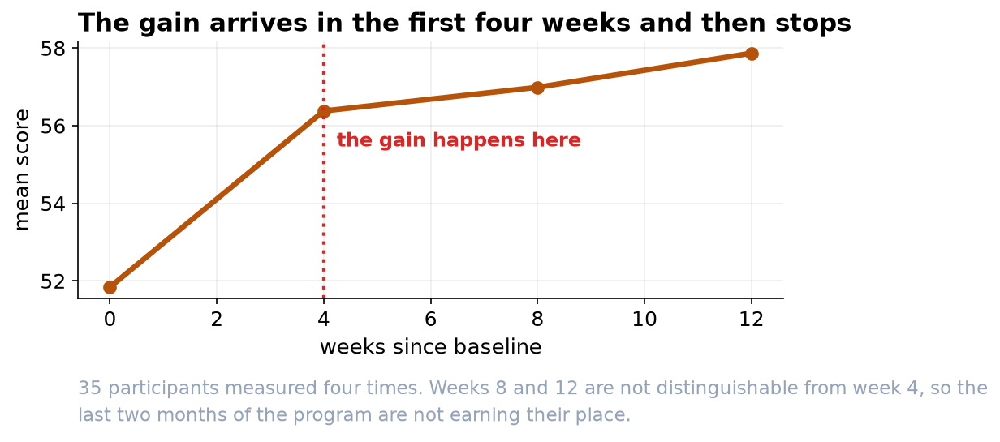

The Training Works, and It Works in the First Month
Scores rose about four and a half points by Week 4 and then stopped rising for the remaining eight weeks.
Recommendation
The program produces a real cognitive gain, but essentially all of it arrives in the first four weeks. Participants improved about 4.5 points by Week 4 and then plateaued: Weeks 8 and 12 are statistically indistinguishable from Week 4. Consider whether the last eight weeks earn their cost, and read the caution about dropouts below before committing either way.
What we found
We tracked 35 participants who completed all four assessments. Average scores went from 51.8 at baseline to 56.4 at Week 4, 57.0 at Week 8, and 57.9 at Week 12. The overall change is statistically solid (p = 0.0012 after the appropriate correction), and a second test that makes fewer assumptions agrees. Comparing each timepoint against baseline, every one is a genuine improvement; comparing the later timepoints against each other, none of them differ.


What that means for the program
If the goal is measurable cognitive gain, the evidence supports a shorter, more intensive program rather than a twelve-week one. That is a cost question as much as a science question: the same gain appears to be available in a third of the time. If the longer program serves other goals, habit formation, engagement, or retention, those should be measured directly, because this assessment does not capture them.
The caution that matters most
Of 42 participants with usable records, 7 had to be excluded because they missed one or more assessments, and this kind of analysis can only use people with a complete set. That is a problem if those people left because they were not improving: we would then be reporting the results of the people it worked for. Before acting on the finding, compare the dropouts to the completers on their baseline and early scores. If they look different, the true average gain is smaller than the number above.
Two more limits
There was no comparison group, so we cannot separate the program from simple practice at taking the assessment; people get better at a test they sit four times. And if participants were recruited because they scored low to begin with, some improvement would appear on its own. A control group would settle both questions.